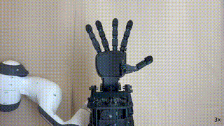
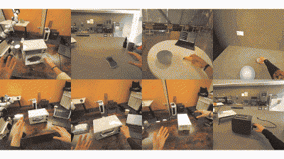
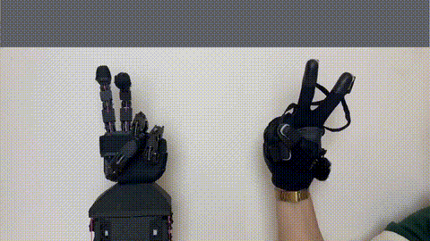
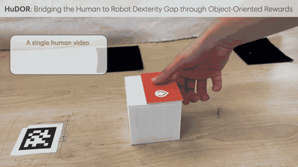
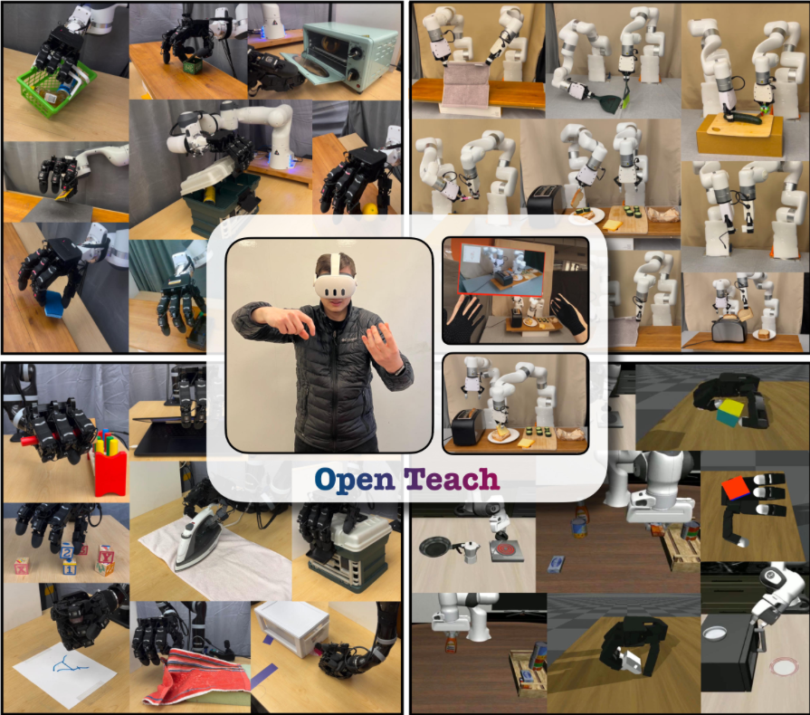
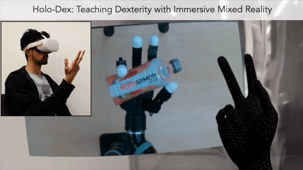
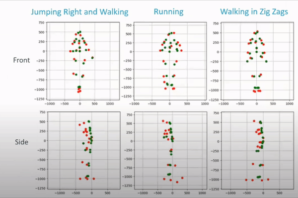

I am a PhD student in the Computational Intelligence, Vision, and Robotics Lab (CILVR) at NYU Courant, where I am lucky to be advised by Lerrel Pinto. My research focuses on data-driven dexterous manipulation for multi-fingered robot hands. Since task-specific robot data is hard to collect with multi-fingered hands, my work centers on three topics:
- Learning by watching humans: AINA, HuDOR, HUG
- Humanoid hand hardware and control that best mimic human hands: RUKA, RUKA-v2
- Data-efficient multi-fingered policy learning: T-Dex, TAVI
I have a master's degree in Computer Science from NYU Courant and was awarded a Fulbright scholarship in 2020. I am currently a Research Scientist intern at Amazon Frontier AI & Robotics (FAR) and previously interned as a Research Scientist on Meta's Embodied AI team. Earlier, I worked as a full-time robotics engineer at DOF Robotics for a year, interned at X (the Moonshot Factory), and did two internships at Google, one of them purely on machine learning.
In my free time, I enjoy spending time with my , crafting, and playing muggle Quidditch! :)
News
- Aug 2026Started interning at Amazon Frontier AI & Robotics (FAR) as a Research Scientist!
- Dec 2025AINA got accepted to ICRA 2026, see you in Vienna!
- Apr 2025RUKA got accepted to RSS 2025!
- Mar 2025I will be interning at Meta as a Research Scientist on the Embodied AI team.
- Jan 2025HuDOR got accepted to ICRA 2025!
- Sep 2024Started my PhD in Computer Science at NYU Courant! I will be working on robot learning for dexterous manipulation, advised by Lerrel Pinto.
- Sep 2023TAVI got accepted to ICRA 2024.
- May 2023Graduated with my master's from NYU and received the Best Master's Thesis Award!
- Mar 2023T-Dex got accepted to CoRL 2023!
- Aug 2020Awarded a Fulbright scholarship in Computer Science, one of 3 granted in Computer Science in Turkey.
Talks
- Aug 2026AINA: Dexterity from Smart Lenses, AI Research Talks @ Percepta, New York
- Aug 2026Closing the Human to Robot Gap for Dexterous Hands, Advances in AI at NYU, Voxel51 Meetup (online) · invited by David Fouhey
- Jun 2026Active Sensing for Dexterous Manipulation (early-career talk), Act to Sense to Act Better: Workshop on Learning and Representations for Active Perception in Manipulation @ ICRA 2026, Vienna
- Feb 2026Learning Dexterity from Human Data, Robot Perception and Learning Lab, UT Austin · video
- Oct 2025Closing the Human to Robot Gap for Dexterous Hands, Workshop on Data-Enabled Learning and Control for Robotics @ IROS 2025, Hangzhou
Professional Service
- 2024–nowReviewer for CoRL (2024–present), ICRA (2025–present), RSS (2025–present), Humanoids 2026, and IEEE RA-L
- Nov 2026Co-organizer, Scaling H2R: Scaling Laws and Diversity in Human-to-Robot @ CoRL 2026
- Sep 2026Co-organizer, Scalable Tactile Sensing for Dexterous Manipulation @ IROS 2026
- Sep 2025Co-organizer, 2nd Workshop on Dexterous Manipulation: Learning and Control with Diverse Modalities @ CoRL 2025
- Jun 2025Co-organizer, 3rd Workshop on Dexterous Manipulation: Learning and Control with Diverse Data @ RSS 2025
Publications
@article{wu2026hug,
title={Human Universal Grasping},
author={Kevin Yuanbo Wu and Tianxing Zhou and Isaac Tu and Billy Yan and Irmak Guzey and David Fouhey and Dandan Shan and Lerrel Pinto},
journal={arXiv preprint arXiv:2606.17054},
year={2026}
}

@misc{liu2026rukav2tendondrivenopensource,
title={Ruka-v2: Tendon Driven Open-Source Dexterous Hand with Wrist and Abduction for Robot Learning},
author={Xinqi Lucas Liu and Ruoxi Hu and Alejandro Ojeda Olarte and Zhuoran Chen and Kenny Ma and Charles Cheng Ji and Lerrel Pinto and Raunaq Bhirangi and Irmak Guzey},
year={2026},
eprint={2603.26660},
archivePrefix={arXiv},
primaryClass={cs.RO},
url={https://arxiv.org/abs/2603.26660}
}

@inproceedings{guzey2025aina,
title={Dexterity from Smart Lenses: Multi-Fingered Robot Manipulation with In-the-Wild Human Demonstrations},
author={Guzey, Irmak and Qi, Haozhi and Urain, Julen and Wang, Changhao and Yin, Jessica and Bodduluri, Krishna and Lambeta, Mike Maroje and Pinto, Lerrel and Rai, Akshara and Malik, Jitendra and Wu, Tingfan and Sharma, Akash and Bharadhwaj, Homanga},
booktitle={IEEE International Conference on Robotics and Automation (ICRA)},
year={2026}
}

@inproceedings{zorin2025ruka,
title={RUKA: Rethinking the Design of Humanoid Hands with Learning},
author={Zorin, Anya and Guzey, Irmak and Yan, Billy and Iyer, Aadhithya and Kondrich, Lisa and Bhattasali, Nikhil X. and Pinto, Lerrel},
booktitle={Robotics: Science and Systems (RSS)},
year={2025}
}

@inproceedings{guzey2025hudor,
title={HuDOR: Bridging the Human to Robot Dexterity Gap through Object-Oriented Rewards},
author={Guzey, Irmak and Dai, Yinlong and Savva, Georgy and Bhirangi, Raunaq and Pinto, Lerrel},
booktitle={IEEE International Conference on Robotics and Automation (ICRA)},
year={2025}
}

@inproceedings{guzey2024see,
title={See to Touch: Learning Tactile Dexterity through Visual Incentives},
author={Guzey, Irmak and Dai, Yinlong and Evans, Ben and Chintala, Soumith and Pinto, Lerrel},
booktitle={IEEE International Conference on Robotics and Automation (ICRA)},
year={2024}
}

@inproceedings{guzey2023dexterity,
title={Dexterity from Touch: Self-Supervised Pre-Training of Tactile Representations with Robotic Play},
author={Guzey, Irmak and Evans, Ben and Chintala, Soumith and Pinto, Lerrel},
booktitle={Conference on Robot Learning (CoRL)},
year={2023}
}

@inproceedings{iyer2024openteach,
title={OPEN TEACH: A Versatile Teleoperation System for Robotic Manipulation},
author={Iyer, Aadhithya and Peng, Zhuoran and Dai, Yinlong and Guzey, Irmak and Haldar, Siddhant and Chintala, Soumith and Pinto, Lerrel},
booktitle={Conference on Robot Learning (CoRL)},
year={2024}
}

@inproceedings{arunachalam2023holo,
title={Holo-Dex: Teaching Dexterity with Immersive Mixed Reality},
author={Arunachalam, Sridhar Pandian and Guzey, Irmak and Chintala, Soumith and Pinto, Lerrel},
booktitle={IEEE International Conference on Robotics and Automation (ICRA)},
year={2023}
}

@inproceedings{guzey2020lhmp,
title={Human Motion Prediction With Graph Neural Networks},
author={Guzey, Irmak and Tekden, Ahmet E. and Samur, Evren and Ugur, Emre},
booktitle={ICRA Workshop on Long-term Human Motion Prediction},
year={2020}
}